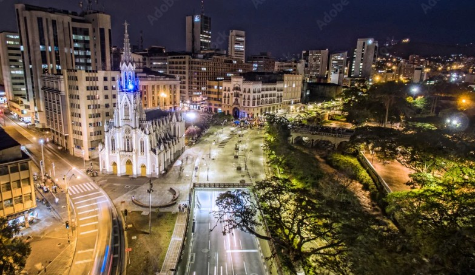
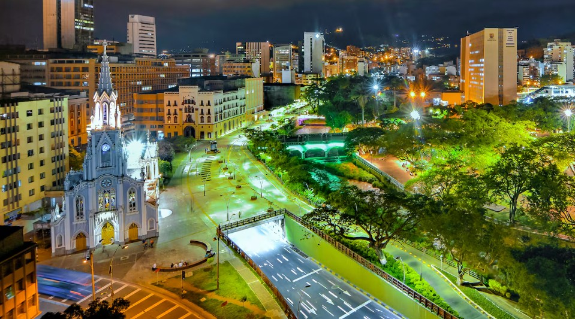
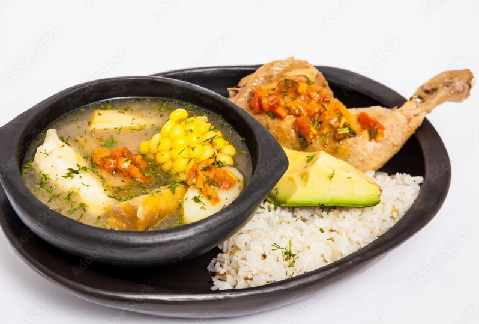
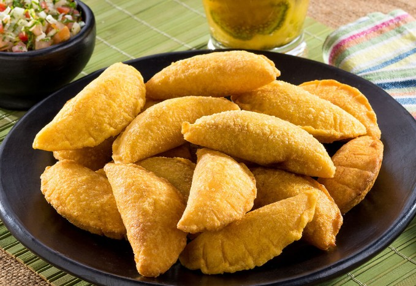
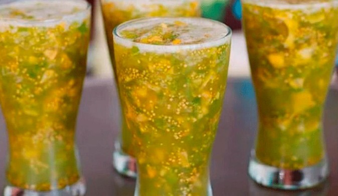

Cali es reconocida a nivel mundial como la Capital de la Salsa, un título que no es casualidad. En esta ciudad la música y el baile forman parte de la vida cotidiana, y es común encontrar academias, espectáculos y eventos donde locales y turistas disfrutan de este ritmo vibrante. La salsa en Cali no solo se baila, se vive con pasión.

Además, Cali cuenta con un clima cálido y agradable durante casi todo el año, lo que la convierte en un destino perfecto para quienes buscan sol y energía tropical. Sus temperaturas suelen ser estables, permitiendo disfrutar de actividades al aire libre, recorridos turísticos y una vida nocturna activa.
Uno de los eventos más importantes de la ciudad es la Feria de Cali, una celebración que se realiza cada diciembre y atrae a miles de visitantes nacionales e internacionales. Durante esta feria, la ciudad se llena de desfiles, conciertos, baile y cultura, convirtiéndose en una experiencia inolvidable llena de alegría y tradición.
Conoce más sobre Cali Ver gastronomíaPor otro lado, Cali está rodeada por las montañas de la cordillera occidental, lo que le brinda paisajes naturales espectaculares. Estos escenarios permiten disfrutar de miradores, caminatas ecológicas y vistas panorámicas impresionantes, especialmente al atardecer, cuando la ciudad se llena de colores cálidos y mágicos.
| Lugar | Ubicación | Características |
|---|---|---|
| Cristo Rey | Cerro Los Cristales, al oeste de Cali | Estatua icónica con vista panorámica de toda la ciudad. Ideal para fotos y atardeceres. |
| Zoológico de Cali | Barrio Santa Teresita | Considerado uno de los mejores zoológicos de Latinoamérica. Tiene gran diversidad de animales y zonas naturales. |
| Barrio San Antonio | Centro histórico de Cali | Calles coloniales, ambiente artístico, cafés y una vista hermosa desde la colina. |
El Bulevar del Río es un espacio moderno y emblemático de la ciudad, ubicado junto al río Cali. Es perfecto para caminar, relajarse y disfrutar de un ambiente tranquilo con zonas verdes, arte y espacios culturales. Este lugar también ofrece una experiencia agradable para compartir, con hermosos atardeceres y un ambiente lleno de vida que refleja la esencia cálida y vibrante de Cali.

Cali es famosa por su deliciosa gastronomía del Pacífico y del Valle del Cauca. Entre sus platos más representativos se encuentran el sancocho de gallina, el arroz atollado, las empanadas vallunas y el champús.

Sancocho de gallina
Arroz Atollado

Empanada valluna

Champús